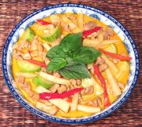

|
Chicken Red CurryThailand - Kaeng Phet Kai Sai No Mai | ||||
| Serves: Effort: Sched: DoAhead: |
2 main *** 40 min hrs Part |
An exceptionally tasty chicken curry, and quick to make (if you have the red curry paste). serve with lots of steamed Jasmine rice. This can be made ahead up to the point of stirring in the Zucchini. | |||
|
1 6 1 5 6 1 5 1/3 1/2 2 ---- |
# oz oz oz T c t T --- |
Chicken meat (1) Zucchini thin (2) Red Chili, fresh (3) Bamboo Shoots Coconut milk Red Curry Paste (4) Kaffir Lime Leaf (5) Water Sugar (opt) Fish Sauce -- Garnish Basil Leaves |
Prep - (20 min)
|